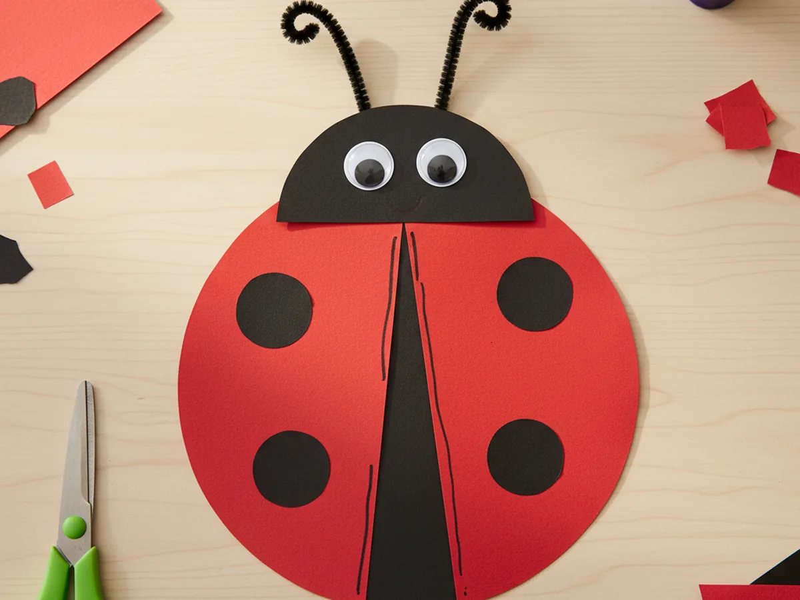
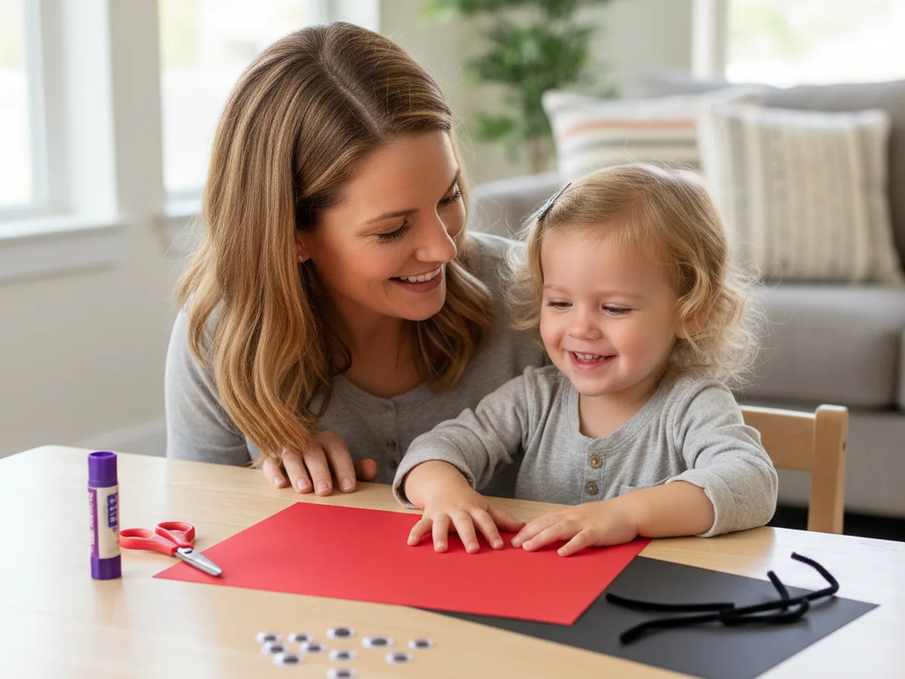
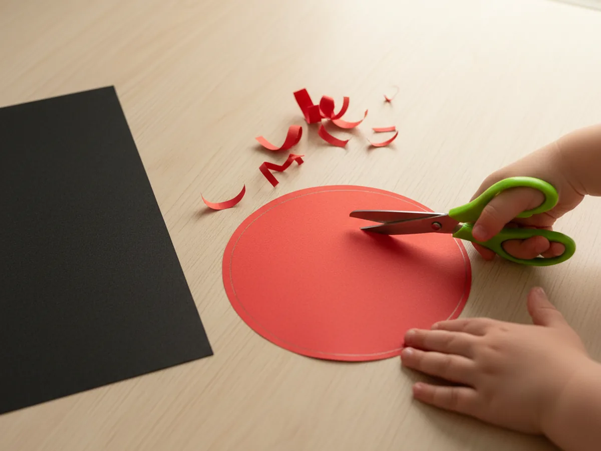
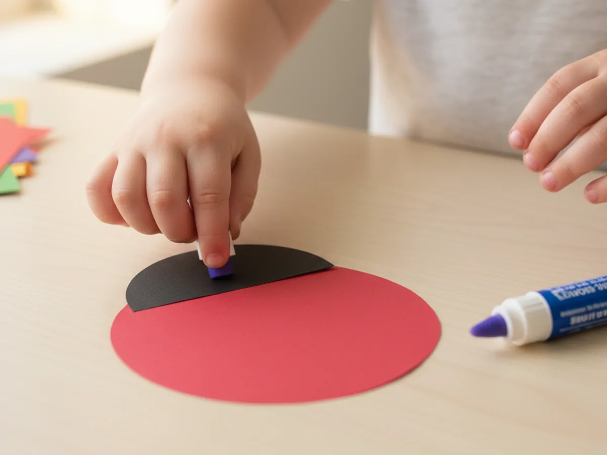
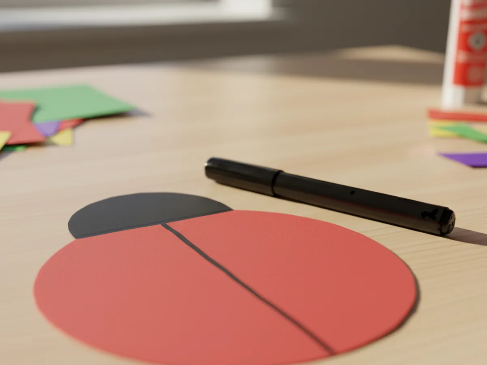
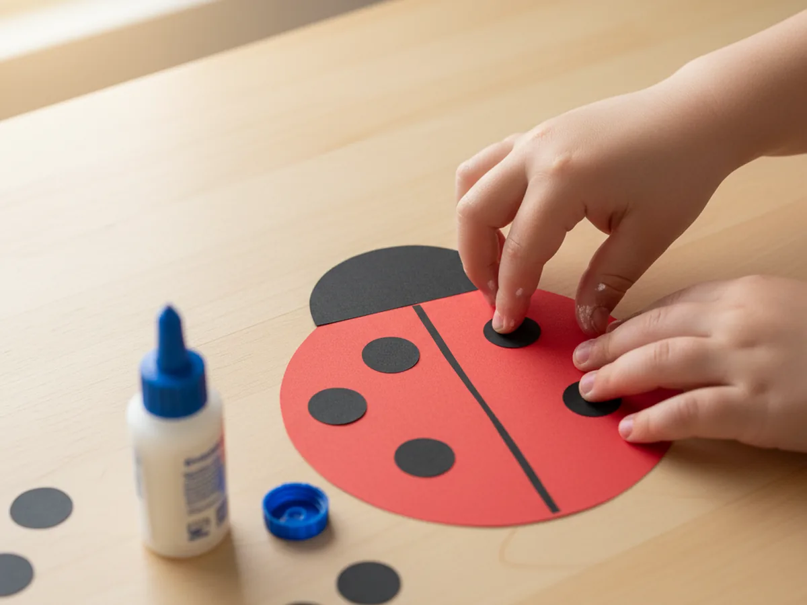
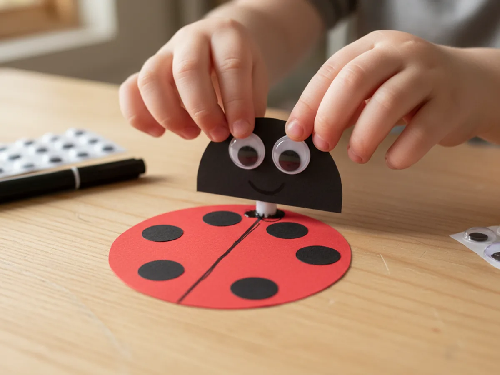
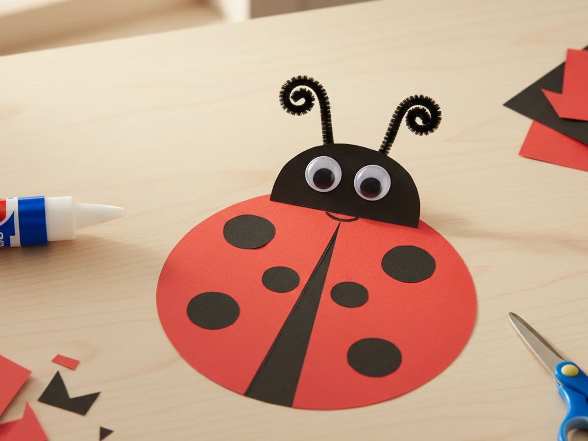

If your little one lights up at every tiny bug they spot in the garden, you are going to love this ladybug paper craft. It comes together with just a few sheets of red and black construction paper, two googly eyes, and a couple of small pipe cleaners for the antennae. The whole project takes about 25 minutes from start to finish, and the result is so cute that your child will want to show it to everyone who walks through the door. 🐞
This paper ladybug craft is perfect for spring afternoons, lazy Saturdays, or any moment when you want to swap a screen for something simple and joyful together. Even toddlers can handle most of the steps, and the spots and antennae give bigger kids a fun way to make each ladybug a little different. Every single one ends up looking unique, and that is exactly the part children adore.
Why Kids Love This Craft
There is something magical about ladybugs that little ones find irresistible. The bright red color, the polka dot pattern, and that tiny round shape feel friendly and almost cartoon-like in real life. When a child gets to make their very own ladybug paper craft, that fascination turns into a project they can hold up proudly and say "I made this." That kind of moment is the whole point of crafting together.
The activity is also wonderful for tiny hands. Cutting curved shapes builds fine motor control. Placing the spots one by one gives children a chance to count, line things up, and feel the satisfaction of decorating from scratch. Even pressing on the pipe cleaner antennae feels exciting, because suddenly the little bug looks alive.
Best of all, this simple ladybug craft opens up the kind of soft, side-by-side conversation that busy days do not always leave room for. You can chat about how ladybugs help gardens, count the spots out loud, or invent a name for your new little friend. Those tiny moments are often the ones children remember the most.

What You'll Need
Here is everything you will need for this easy ladybug paper craft. Setting it all out on the table before your child sits down keeps the activity flowing and makes the whole craft feel calm.
- Crayola Construction Paper (240 sheets, assorted colors), you mainly need red and black sheets for this craft.
- Fiskars Pointed-Tip Kids Scissors, perfectly sized for small hands and great for cutting curves.
- Elmer's All Purpose School Glue Sticks (30-pack), washable, easy to grip, and clean to work with.
- DECORA Self-Adhesive Googly Eyes (assorted sizes), two per ladybug, just peel and press.
- Cousin DIY Black Chenille Pipe Cleaners, used for the cute little ladybug antennae.
- Crayola Broad Line Markers (10 classic colors), for the wing line and the tiny smile on the face.
- A pencil, for tracing the body and head shapes before cutting.
- Clear tape or extra glue, useful for holding the antennae in place.
Step-by-Step Instructions
This ladybug paper craft step by step is genuinely easy to follow. Take it one little step at a time and let your child do as much as they can on their own.
Step 1: Cut the Ladybug Body
Start with a sheet of red construction paper. Use a pencil to draw a large round circle, about the size of a small saucer, in the middle of the page. This will be your ladybug body. Once the shape is drawn, have your child cut along the line. Slightly wobbly edges are completely fine and actually make the ladybug look more friendly and handmade.
For toddlers and younger preschoolers, draw the circle for them and let them practice cutting along the curve. If the body comes out a little lumpy or imperfect, do not worry. A slightly uneven ladybug always has the most personality.

Step 2: Cut and Attach the Black Head
From a sheet of black construction paper, draw a smaller half-circle, about a third of the width of the red body. Cut it out and have your child glue it onto the top edge of the red body, with the flat side lined up along the curve. This little black dome instantly turns the red shape into a recognizable ladybug.
Press firmly for a few seconds so the glue takes hold, and gently smooth out any bumps. From this point on, the project will already start to look like a sweet little bug.

Step 3: Draw the Wing Line
Grab a black washable marker and help your child draw a single straight line down the middle of the red body, starting just under the head and going all the way to the bottom. This line splits the back into two wings, which is what gives a ladybug its classic look. A ruler can help here, but a freehand line works just as well for a handmade feel.

Step 4: Add the Black Spots
Now for the most fun part of the paper ladybug craft: the spots. From your black construction paper, cut six to eight small circles, each about the size of a coin. They do not have to be perfectly round. Have your child glue three or four spots on each side of the wing line, spreading them out evenly across the red body. This is where every ladybug starts to look unique.
If your toddler wants more spots or fewer spots, let them. Some kids love an exact pattern, others prefer wild spots everywhere, and both look adorable. Counting the spots together while gluing also turns this step into a sneaky little math moment.

Step 5: Add the Eyes and Smile
Time to give your ladybug a face. Peel the backing off two self-adhesive googly eyes and let your child press them firmly onto the black head, near the front. Two medium eyes look the cutest, but two small ones placed close together work just as well. Then use a black or white marker to draw a tiny curved smile right between the eyes, and a couple of little dots for nostrils if you feel like it.
The moment those eyes go on, the ladybug suddenly has a whole personality. Our last one ended up looking a bit dreamy, which the kids decided meant she was thinking about her favorite flower.

Step 6: Add the Antennae and Final Touches
Cut two short pieces of black pipe cleaner, each about two inches long, and curl a small loop at the top of each one with your fingers. Add a tiny dab of glue or a small piece of tape on the back of the black head and press the straight end of each pipe cleaner in place so the curled tops poke up like little antennae. If you do not have pipe cleaners, you can cut two thin strips of black paper instead. Both versions look just as sweet. ✨
Once the antennae are on, your ladybug paper craft is officially complete. Hold it up, gently make it crawl across the table, and watch your child's face light up. That little giggle is exactly the moment this whole craft is for. 💛

Variations to Try
Spring Garden Scene: Glue the finished ladybug onto a large piece of green construction paper and let your child draw or cut out grass blades, simple flowers, and a smiling sun around it. Suddenly you have a whole little garden picture your child made themselves, and it looks beautiful taped to the fridge or framed in a child's bedroom.
3D Folded-Wing Ladybug: Cut the red body in half straight down the middle, then glue the flat edges of both halves onto a black oval base, leaving the outer edges free so the wings lift up slightly. The result is a sweet 3D ladybug that looks like it is just about to fly. This version is great for slightly older kids who enjoy a tiny extra challenge.
Counting Ladybug Activity: Make several small ladybugs, but vary the number of spots on each one. Then play a fun matching game with your child where they count the spots and pair the bug with the right number card. It turns this craft into a sneaky early-math activity that feels like pure play.
Final Thoughts
This ladybug paper craft is one of those projects that feels almost too easy for how cute the result is. It uses a handful of simple supplies, takes about 25 minutes from start to finish, and leaves you with something so charming your child will be talking about it for the rest of the day. More than that, it gives both of you a quiet, joyful moment of making something together. 🌷
If your little one makes their own paper ladybug, I would love to see it. Save this article on Pinterest so other craft-loving mamas can find it easily. Happy crafting!
More Crafts You'll Love
If your child enjoyed this ladybug paper craft, they will adore these other sweet little bug-themed paper projects too: